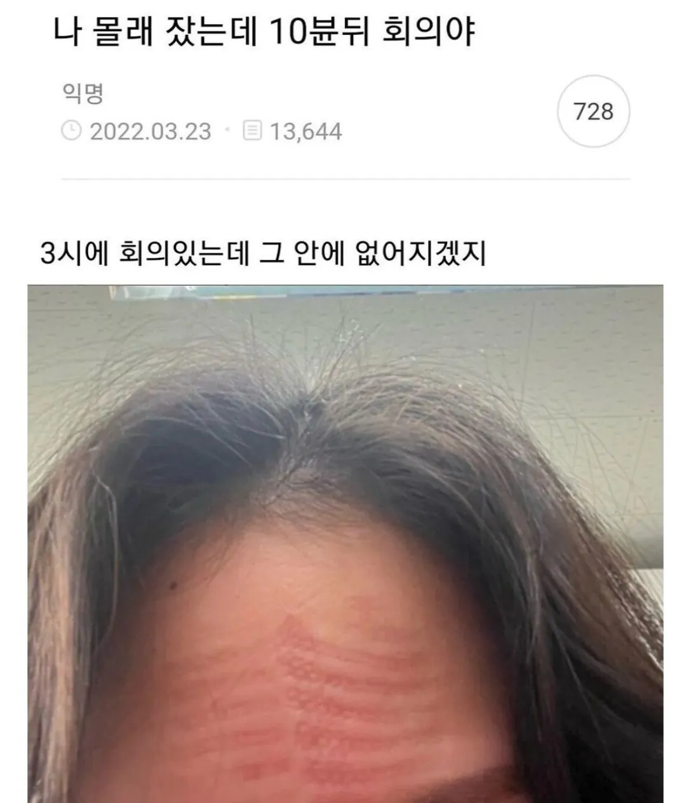

ㅋㅋㅋㅋ

ㅋㅋㅋㅋ
놀랍게도 빨판상어의 빨판은 배가 아니라 이마에 달려있다!!!!!!
성조기 낙인 찍은거 같다
계속 빡친 표정 짓고 있어야지 뭐
나태의 낙인
마빡에 복근이 ㅋㅋㅋㅋ
인상으로 보이게 오늘 기분나쁜척해야함
가르마 있는거 풀고 최대한 머리카락 앞으로 땡겨서 가려야지
정답! 빨판부캉이
제5원소
이마 운동 빡쎄네 했네 ㅋㅋ
재빨리 머리 덮고 물 뭍혀야함
선즙필승 가즈아
앞머리 덮으면 되겠네
왤케화났어요

쾌걸 근육맨임?
인상적인 이마주름을 가진 여자였다.
초대형 거인 갈비뼈인줄 ㄷㄷㄷㄷ
20대면 2시간 걸림 ㅋㅋ
30대면 퇴근할때까지 남아있을듯 ㅋㅋㅋㅋ
빨판상어다
아카자 ㄷㄷ
너부리야 개빡춌니?
평평한데다 대고 다시 엎드려야지 뭐 ㅋㅋ
??? : 김 대리는 얼굴에 수심이 가득하군

점심에 찍힌게 아직도 안없어진거라해야지
미쉐린 CC2라도 베고 잔거냐
과장님 오늘 화 많이 나셨나보다...몸사려야겠다
빨판상어 뱃지느러미인줄 알았다